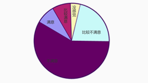
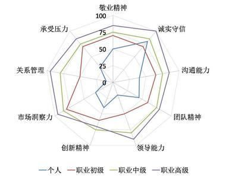
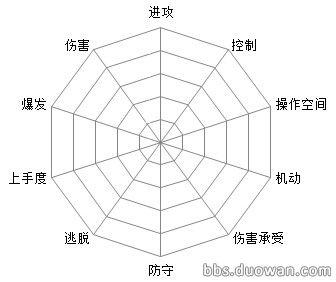

性格测试
职业测评
能力测评
测你在生活中是不是一个居安思危的人
生活无处不惊喜，也无处不惊讶。即便我们每天的生活还算充实和安稳，但是不可否认，很有可能我们会遇到一些出其不意的事物和事件。
你在面对大是大非有何不同态度？
人生总是五味杂陈，多姿多彩。你会经历成功，也会遭遇失败。人生的大起大落可能会击败你，也可能会让你烈火重生，变得更加优秀。
你的哪点性格影响你走向成功
人总是需要历经风雨才能见彩虹，人生的道路会是诸多坎坷，历经坎坷才能离成功更进一步。成功不会是天上掉馅饼般的降临，总是要经过自己的努力奋斗
测测看你真实的性格好不好
你对自己的性格了解吗？应该说在这个世界上，自己才应该是最了解自己的人，整日朝夕相处，没有秘密，那么你能够很清楚的诠释自己的性格吗？
失业会改变你性格的哪点？
工作作为每个人生活的重大一部分，失业就宣告你生活的一大部分就坍塌了，在你从新修建你生活的这部分，继续寻找新的工作之前，这份坍塌的废墟
测你的个性和社会角色是否矛盾
每个人都有自己的脾气，正是这些脾气组成了各种各样的个性。每个人的个性都是多样而不同的，但是因为角色的原因，有些个性就不符合本身的角色。
霍兰德职业兴趣量表及在线测试(完整专业版)
每很多网友会问我们，才储除了大名鼎鼎的MBTI职业性格测试，在志愿选择或专业选择的时候，还有其他工具可以作为推荐参考吗？答案是有的 —— 霍兰德职业兴趣量表便将职业与兴趣做出了某种更为直接的关联

超准职业测试：测你最适合干什么样的工作？
命中注定，你是该成为医生还是打字员?在你本能好好去教书的时候，为什么选择了去卖书?做做下面的职业测试，也许能帮你决定该沿着哪一条职业道路前进。
你的哪点性格影响你走向成功
人总是需要历经风雨才能见彩虹，人生的道路会是诸多坎坷，历经坎坷才能离成功更进一步。成功不会是天上掉馅饼般的降临，总是要经过自己的努力奋斗

职业锚测评
职业锚是指当一个人面临职业选择的时候，他无论如何都不会放弃的职业中至关重要的东西或价值观。研究表明职业锚是内心深处对自己的看法，它是自己的才干、价值观、动机经过自省后形成的
求职能力测试
本求职能力测试是由向阳生涯管理咨询集团的职业规划师团队凝结11年的职业规划咨询和求职辅导经验而精心设计。旨在帮助求职正确认识自身的求职能力，并有针对性地作出调整。
 职业能力倾向(自评)测验
普通能力倾向成套测验（general aptitude test battery ,简称GATB）,最初是美国劳工部队从1934年利用了10多年时间研究制定的。它是对许多职业群同时检查各自的不适合者的一种成套测验。
职业能力倾向(自评)测验
普通能力倾向成套测验（general aptitude test battery ,简称GATB）,最初是美国劳工部队从1934年利用了10多年时间研究制定的。它是对许多职业群同时检查各自的不适合者的一种成套测验。

职业能力测试
日常生活和职业活动的观察和研究都证明，人的职业能力各不相同，有人善于言语交谈，有人善于操作，有人善于理论分析，有人善于事务性工作。
职业能力测试：常识判断一
常识判断主要考查考生的知识积累，为了帮助大家更好的进行备考，中公教育特别整理了一批常识判断题，助力考生取得成功!


你的哪点性格影响你走向成功
人总是需要历经风雨才能见彩虹，人生的道路会是诸多坎坷，历经坎坷才能离成功更进一步。成功不会是天上掉馅饼般的降临，总是要经过自己的努力奋斗

简历助攻
面试宝典
每日笔试
HR对应届毕业生简历的几点建议
大家普遍存在一的个误区是以为简历没通过筛选或面试没通过就表示被BS，表示自
己不如别人了。其实一般公司招人的是选择最合适的人，而不是能力最强的人。
个人简历细节建议
不知道你是否经历过这样一个矛盾的过程：到底求职个人简历上写不写年龄好，写吧，又担心自己年纪太大，对方不要，或者年纪太小，对方也不要
100%真实的常见简历问题及其修改建议
本文所列出的简历问题都来自于求职者提交的真实简历：CareerPlus在天涯论坛的“职场天地”举办的免费简历评估活动中，一共评估了100位朋友的简历。
提高简历竞争力的四点建议
为了提高求职者的简历竞争力，从而提升成功就业的机会，今天我们邀请资深简历设计师给出简历制作的四点建议：
简历不能超过一张纸？有很多这种不靠谱的求职建议
找工作的时候，你会听到来自家长，朋友，同学的各种建议，但问题是，其中不乏有不成熟的建议。朋友和家人都是好心，但是劳动力市场瞬息万变，几年前的做法已经不能适用于现在的情况了，而且给出建议的人可能得到了错误的信息。
好用的简历制作工具 , 不解释
应届生简历 简历代写 打印简历 PDF格式简历 多页纸简历 小升初简历
[面试技巧]16个经典面试问题回答思路
面试过程中，面试官会向应聘者发问，而应聘者的回答将成为面试官考虑是否接受他的重要依据。对应聘者而言，了解这些问题背后的“猫腻”至关重要
大学生面试技巧及注意事项
在大学生毕业就业时，面试是一个非常重要的过程，有些大学生在这个过程中感到不知所措，或者做得不好，使自己在求职中因小失大，达不到成功。
面试官问你的缺点是什么，应该如何回答？
EXM？你确定不是在变相夸自己？你夸自己不重要，重要的是，我觉得我的智商被藐视了。
最厉害的面试技巧都有哪些？
我发现一个现象，在每一场面试中，面试官对我的印象都很好，甚至有一次通知复试时，HR还特意对我说：“主管对你的印象非常不错。”
">面试时如何谈离职原因才靠谱？
在面试初次跳槽的人员时常会听到：上司不好、老板的情人不好、老板娘很烦、老板很刻薄、公司很差等诸如此类“踩”别人的答案。

申论技巧：巧用事例让文章写作更为轻松
中公事业单位招聘考试网为大家带来申论技巧：巧用事例让文章写作更为轻松，希望可以帮助大家顺利备考事业单位招聘考试！
事业单位职业能力测试：一分钟速解各类复杂数学运算
在事业单位考试中，往往每次考试都会有一道复杂的数学运算题目，我们很多同学平时做题少，总想着去算，结果一道题半天也整不出来，今天我们给大家介绍几种常用的方法，帮助大家在考试中节约时间，提高正确率
事业单位面试技巧：专家教你面试考试中如何构思
面试考试的一个突出特点是时间紧迫，假如不能合理高效地利用，就无法取得理想的成绩。众所周知，面试考试中的时间无非是两大块——构思与答题。
申论考试技巧：申论作文立意常见的几种误区
在申论考试中，有一种题型占据着申论考试的半壁江山，分值占据了申论考试的50%左右，这就是申发论述。需要引起同学们的重视。
事业编考试基础知识：一分钟掌握国情地理
在事业单位等考试当中，国情地理部分所占的比重与重要性都属于前列，由于习惯性的思维和认识习惯，考生往往只特别注意到了政治和法律部分的知识点，而恰恰忽略了排版在最后一篇的国情地理
行测答题技巧：言语这些题型你知道吗？
上半年有些同学经历了省考，经历了事业单位的统考;也有一部分同学即将踏入下半年事业单位考试的行列。
职业规划
职业导航
素质培训
浅谈职业生涯规划
职业生涯是每个人职场发展的过程，而规划就如同发展过程的蓝图和计划。有效地规划职业生涯就就好比标出了职业生涯各阶段的里程碑，来指导各个阶段的具体工作
面试中如何回答"你的五年工作规划是什么"
无论你是应届生还是有了几年工作经验的职场人，你都会在面试中碰到与职业选择有关的问题。有个最常见的版本是，“你的五年工作规划是什么？”
职场达人告诉你职业规划五要点
经验的朋友们，大家好，我是毛文，很高兴来到这样将自己在实际工作中获得的职业规划经验分享给大家，希望这些经验能够对职场新人们有所帮助。
迄今见过最好的职业规划的文章
职业的选择，总的来说，无非就是销售、市场、客服、物流、行政、人事、财务、技术、管理几个大类，有个有趣的现象就是，500强的CEO当中最多的是销售出身


浅谈职业生涯规划
职业生涯是每个人职场发展的过程，而规划就如同发展过程的蓝图和计划。有效地规划职业生涯就就好比标出了职业生涯各阶段的里程碑，来指导各个阶段的具体工作
面试中如何回答"你的五年工作规划是什么"
无论你是应届生还是有了几年工作经验的职场人，你都会在面试中碰到与职业选择有关的问题。有个最常见的版本是，“你的五年工作规划是什么？”
职场达人告诉你职业规划五要点
经验的朋友们，大家好，我是毛文，很高兴来到这样将自己在实际工作中获得的职业规划经验分享给大家，希望这些经验能够对职场新人们有所帮助。
迄今见过最好的职业规划的文章
职业的选择，总的来说，无非就是销售、市场、客服、物流、行政、人事、财务、技术、管理几个大类，有个有趣的现象就是，500强的CEO当中最多的是销售出身
浅谈职业生涯规划
职业生涯是每个人职场发展的过程，而规划就如同发展过程的蓝图和计划。有效地规划职业生涯就就好比标出了职业生涯各阶段的里程碑，来指导各个阶段的具体工作
面试中如何回答"你的五年工作规划是什么"
无论你是应届生还是有了几年工作经验的职场人，你都会在面试中碰到与职业选择有关的问题。有个最常见的版本是，“你的五年工作规划是什么？”
职场达人告诉你职业规划五要点
经验的朋友们，大家好，我是毛文，很高兴来到这样将自己在实际工作中获得的职业规划经验分享给大家，希望这些经验能够对职场新人们有所帮助。
迄今见过最好的职业规划的文章
职业的选择，总的来说，无非就是销售、市场、客服、物流、行政、人事、财务、技术、管理几个大类，有个有趣的现象就是，500强的CEO当中最多的是销售出身